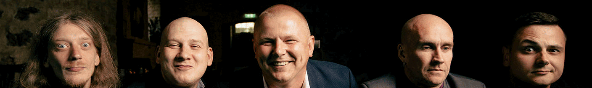

The Latvian Blues Band (LBB) is one of Europe’s most recognized blues acts — a dynamic, high-energy group with more than two decades of experience performing on world stages.
Founded in Riga in 2000, the band’s journey began with a collaboration with Canadian blues legend Johnny V, followed by an extensive concert tour across Canada — from Toronto to Calgary. Since then, the LBB has become a respected name on the international blues scene.
Celebrating its 25th anniversary, the Latvian Blues Band continues to deliver unforgettable live performances across Scandinavia and Europe, blending traditional blues roots with modern groove and soulful precision.
The LBB’s shows are a guaranteed highlight for any festival line-up — energetic, professional, and deeply rooted in the spirit of the blues.
"Beyond their experience and youthful enthusiasm, this is a talented band, individually but especially together. Sometimes non-American blues singers' accents can clash with their music. This is NOT true for the Latvian Blues Band. They have strong and bluesy voices that sound unaffected to me. The Latvian Blues Band is a band where you see the Latvians but hear the blues.”
– BOB MARGOLIN ‘Blues Revue’ Magazine
This PDF includes our full stage plot and hospitality requirements
Email: lbb.management@inbox.lv
Website: www.latvianbluesband.lv